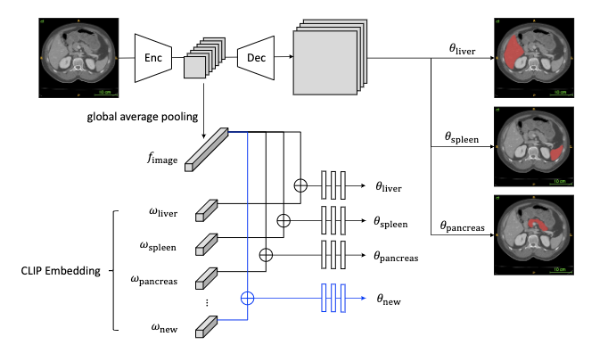

Ademola Olorunnisola
Research Interests
- Computational Methods: Numerical simulations for partial differential equations.
- Fractional Order Diffusion Equations: Methods for solving complex diffusion processes.
- Image Processing: Techniques for enhancing and analyzing images for scientific applications.
News
- [2025] Volunteering at the AMTE Conference in Reno, Nevada.
Publications
-
 JournalJournal of Numerical and Applied Mathematics (2025)
Services
Conference Volunteer
Skills and Interests
- Computer Skills: Word, MATLAB, LaTeX, Python
- Other Interests: Soccer, Music Production
Powered by Jekyll and Minimal Light theme.